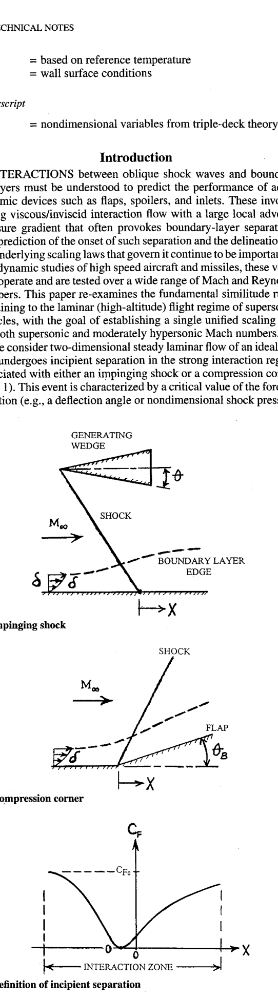
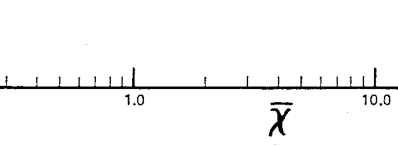

01中文摘要
重新考察高速层流流动起始分离的相似律。采用三层结构理论的高雷诺数首阶近似，并用参考温度法把壁温影响并入物性；对压缩拐角（入射激波情形类似）分析壁面剪应力为零的条件。结果给出无量纲压力p_i.s.=1.03、起始分离角θ_i.s.=K_s p_i.s.（K_s=1.52），反变换后得到M∞θ_i.s.的标度，在高超声速极限退化为常见的M∞θ_i.s.∝χ^0.5形式，并扩展到较低超声速和跨声速；壁温效应主要通过参考温度下的Chapman-Rubesin常数进入，降低壁温使比例系数减小。
02阅读说明
理论分析类 Technical Note（AIAA Journal, Vol.33, No.1, pp.178-181, 1995），共4页。bundle 文本层公式大量丢失或错位，已按规范回读原 PDF 第179-181页核对关键公式（6页限额内使用3页）。图1为示意组图、图2为实验数据相关图，散点与拟合线可辨，但具体数据点数值不可逐点读取。信息完整度较高；式(7)-(13)、式(20)、式(22)-(27)在文本层符号残缺，未逐式抄录，凡不能确认处均注明。 文章类型：期刊
03一句话核心与三句话摘要
用三层理论加参考温度法为高超起始分离经验判据奠定理论基础，并推广为跨声速至中等高超的统一标度律。
- 式(1) M∞θi.s.≈ξχ̄^(1/2)（ξ≈70-80，随壁温变化）虽属半经验判据，却长期成功关联大量实验与 Navier-Stokes 解，本文旨在为其提供理论基础（p.179）。 原文明确
- 把压缩拐角相互作用按三层理论作高雷诺数渐近展开，用 Eckert 参考温度把可压缩性与壁面传热并入 C_REF，由分离判据 p̂_i.s.=1.03 反演得式(19)，图2在 3<M∞<16 范围与实验数据一致（p.179-180）。 AI概括
- 式(19)表明 θi.s.∝[(M∞²-1)/Re_L]^(1/4)、壁温效应只通过 C_REF 进入；跨声速侧改用非线性外区关系后得到式(27)统一律（p.180-181）。 AI概括
04核心内容清单
| 要点 | 类型 | 重要性 | 原文依据 | 属性 |
|---|---|---|---|---|
| 起始分离由临界强迫函数（偏转角或激波压比）表征，是 M∞、Re_L、T_w/T_w,ADIAB 的函数；工程上常用式(1)作为判据。 | 问题定义 | A | p.178-179, Eq.(1) | 原文明确 |
| 高 Re 下干扰区组织为外区/中区/内区三层，厚度 ε³L、ε⁴L、ε⁵L，ε=Re_L^(-1/8)。 | 理论假设 | A | p.179, Formulation of the Analysis | 原文明确 |
| 用 Eckert 参考温度式(6)把可压缩性与壁面传热折算为参考温度下的等效不可压边界层。 | 方法 | A | p.179, Eq.(6) | 原文明确 |
| 式(7)-(13)的无量纲变换把三层方程化为与 M∞、T_w 无关的通用形式(14)-(17)。 | 推导 | B | p.179, Eqs.(7)-(17) | 原文明确 |
| 已有数值解表明壁面剪应力消失对应普适无量纲压力 p̂_i.s.=1.03，且 θ_i.s.=K_λp̂_i.s.，K_λ=1.52。 | 分离判据 | A | p.179, Eq.(18) | 原文明确 |
| 反演得核心标度律式(19)，高超极限下退回式(1)，从而为经验判据提供理论基础。 | 核心结果 | A | p.179, Eq.(19) | 原文明确 |
| 对较低超声速 M∞，式(1)需把干扰参数乘以修正因子 β/M∞，即式(19)扩展了式(1)的适用范围。 | 结果解释 | A | p.180 | 原文明确 |
| 式(19)意味着 θi.s.∝[(M∞²-1)/Re_L]^(1/4)，随 Re_L 增大或 M∞ 减小缓慢下降。 | 标度关系 | A | p.180 | AI概括 |
| 图2用 3<M∞<16 的多来源实验数据检验式(19)，双对数相关线与斜率1/2一致。 | 验证 | A | p.180, Fig.2 | 原文明确 |
| 压力升形式式(20)退化为斜坡与入射激波层流分离区自由干扰的已知标度律。 | 结果 | B | p.180, Eq.(20) | 原文明确 |
| 壁温效应完全含于 C_REF；ω=0.5 的前导渐近只能捕获约60%的观测总传热效应，绝热壁正确的马赫数依赖是 M∞² 而非 M∞。 | 壁温效应 | A | p.180, Eqs.(21)-(24) | 原文明确 |
| 跨声速侧以外区非线性关系(25)-(26)推广，得到式(27)统一律；K_T>1 时 p̂_i.s. 几乎不变。 | 扩展 | A | p.180-181, Eqs.(25)-(27) | 原文明确 |
05引言：研究问题与领域缺口
研究对象是二维定常层流理想气体在压缩拐角或入射激波强干扰区内的起始分离（p.178, Fig.1）。工程背景：襟翼、扰流板、进气道等气动器件的性能预测依赖对激波/边界层干扰及分离起始标度律的认识（p.178）。领域缺口：常用判据式(1) M∞θi.s.≈ξχ̄^(1/2)（ξ≈70-80，随 T_w 变化）只是半经验关系，缺乏理论基础，且只覆盖超声速/高超区，未包含跨声速与壁面传热效应（p.179）。目标：用三层理论（triple-deck）在参考温度法框架下重新推导，建立同时适用于超声速与中等高超马赫数的单一统一标度律，并纳入非绝热壁效应（p.178-179）。假设与边界：局部短尺度干扰，明确排除钝头、前缘等更大尺度效应；以压缩拐角为主，入射激波问题“follows similar lines”（p.179）。
06流动条件与几何构型
| 项目 | 数值/描述 | 依据 | 备注 |
|---|---|---|---|
| 流动类型 | 二维定常层流、理想气体 | p.178, Introduction | 全文理论前提，未考虑湍流或三维效应 |
| 相互作用类型 | 压缩拐角（主）；入射斜激波“follows similar lines”，未展开推导 | p.178-179, Fig.1 | Fig.1(a) 入射激波、(b) 压缩拐角、(c) 起始分离定义 |
| 马赫数范围 | 超声速至中等高超；实验数据相关覆盖 3<M∞<16 | p.178, p.180, Fig.2 | 跨声速扩展仅限 M∞>1 一侧（p.180） |
| 雷诺数 | 高 Re 前导渐近，ε=Re_L^(-1/8)→0 | p.179 | 未给出具体 Re 数值范围 |
| 壁温条件 | 绝热壁至强冷壁，以 T_w/T_w,ADIAB 表征 | p.178-180 | 非绝热效应通过 C_REF 进入 |
| 气体与粘性 | 空气，μ~T^ω，0.5≤ω≤1；γ 出现在跨声速关系(25)-(27) | p.179-181 | γ 具体取值文中未提及 |
| 空间尺度 | 局部短尺度干扰，忽略钝头、前缘等更大尺度效应 | p.179 | 作者明确的适用边界 |
| 参考长度 | L，定义见图1 | p.178, Nomenclature; Fig.1 | 文中未给出 L 的具体几何定义文字 |
07核心现象与关键参数
| 参数 | 定义 | 数值 | 关系/说明 | 依据 |
|---|---|---|---|---|
| χ̄（粘性干扰参数） | 原文 Nomenclature 记为 viscous interaction parameter；定义式在 bundle 文本层残缺 | 文中未给出数值；式(19)中以 χ̄^(1/2) 出现 | M∞θi.s.∝χ̄^(1/2) | p.178 Nomenclature; p.179 Eq.(19) |
| C_REF（Chapman-Rubesin 参数） | 按参考温度取值的 Chapman-Rubesin 参数，C_REF=μ_REF T∞/(T_REF μ∞) | 由式(6)与 μ~T^ω 计算，无固定数值 | 壁温与压缩性效应全部并入 C_REF | p.179 |
| T_REF/T∞ | Eckert 参考温度比 | 0.50+0.039M∞²+0.50T_w/T∞ | 式(6) | p.179, Eq.(6) |
| p̂_i.s. | 起始分离时的无量纲壁面压力（三层理论尺度） | 1.03 | 壁面剪应力消失判据 | p.179, Eq.(18) |
| K_λ | 偏转角与无量纲压力的比例常数，θ_i.s.=K_λp̂_i.s. | 1.52（取自 Ref.8 的数值解） | 式(18)后文字 | p.179 |
| ξ | 式(1)中的经验常数 | ≈70-80，随 T_w 变化 | M∞θi.s.≈ξχ̄^(1/2) | p.179, Eq.(1) |
| ω | 粘性-温度幂律指数，μ~T^ω | 0.5≤ω≤1；壁温效应算例取 ω=0.5 | 进入 C_REF 与式(23)-(24) | p.179-180 |
| ε | 三层理论小参数 | ε=Re_L^(-1/8) | 三层厚度 ε³L、ε⁴L、ε⁵L | p.179 |
08方法与数据
理论框架：高 Re 下相互作用区分为外区势流扰动、中区旋转无粘扰动和内区粘性扰动三层，厚度分别为 ε³L、ε⁴L、ε⁵L，沿流向干扰区长度 ε³L，ε=Re_L^(-1/8)（p.179）。可压缩与传热修正：采用参考温度法，按 Eckert 结果式(6) 取 T_REF=0.5T∞+0.039M∞²T∞+0.5T_w，并以 C_REF=μ_REF T∞/(T_REF μ∞)、μ~T^ω（0.5≤ω≤1）表征物性（p.179）。无量纲化：式(7)-(13) 定义 x̂、ŷ、û、v̂、p̂、θ̂、δ̂*，把控制方程化为通用三层方程组(14)-(17)，其中外区 p̂=v̂_e、中区 v̂=d(ŷ_B+δ̂*)/dx̂、内区为边界层方程（p.179）。分离判据：引用已有解析/数值研究结果，壁面剪应力消失对应 p̂_i.s.=1.03（式18），且 θ_i.s.=K_λ p̂_i.s.，K_λ=1.52（p.179）。反演：按式(12) 逆变换得式(19)。跨声速扩展：外区改用 Sirovich-Huo 非线性压力-流线偏转关系(25)，定义跨声速粘性干扰参数 K_T，数值结果表明 K_T>1 时 p̂_i.s. 变化很小，仍可用式(18)，由此得式(27)（p.180-181）。检验：式(19) 与图2实验数据（3<M∞<16）相关；壁温效应与 Needham 高冷壁关系式(24)比较，并讨论 ω=0.5 时只能捕获60%的总传热效应（p.180）。
| 项目 | 内容 | 依据 | 备注 |
|---|---|---|---|
| 理论框架 | 高 Re 三层理论（triple-deck）前导渐近 | p.179 | 外区势流、中区旋转无粘、内区粘性 |
| 可压缩/传热修正 | 参考温度法 + Eckert 参考温度式(6)，C_REF 表征物性 | p.179, Eq.(6) | 作者称该结果有可压缩边界层理论基础（引 Ref.7） |
| 粘性-温度关系 | μ~T^ω，0.5≤ω≤1 | p.179 | ω=1 对应 Stewartson 模型流体 |
| 无量纲化 | 式(7)-(13) 的 x̂、ŷ、û、v̂、p̂、θ̂、δ̂* 变换 | p.179 | 具体指数在文本层残缺，未逐式转录 |
| 控制方程 | 通用三层方程组(14)-(17) | p.179 | 含外区 p̂=v̂_e、中区 v̂=d(ŷ_B+δ̂*)/dx̂、内区边界层方程及匹配条件 |
| 分离判据 | 引用已有数值解：p̂_i.s.=1.03，θ_i.s.=K_λp̂_i.s.，K_λ=1.52 | p.179, Eq.(18); Ref.8 | 非本文独立数值计算 |
| 跨声速扩展 | 外区用 Sirovich-Huo 非线性压力-流线偏转关系(25)，定义 K_T，内区/中区方程不变 | p.180-181, Eqs.(25)-(26) | K_T>1 时 p̂_i.s. 变化很小 |
| 验证方式 | 与图2实验数据（3<M∞<16）相关；与 Needham 高冷壁关系式(24)比较 | p.180, Fig.2 | 未做误差统计或网格/数值收敛检验 |
| 适用域声明 | 前导渐近、层流、局部短尺度；跨声速部分作者称为“perhaps of only academic interest” | p.179-181 | AI概括 |
09核心推导与公式
把起始分离视为三层理论中的普适事件：内区粘性响应产生位移厚度，改变外区压力，外区压力再反馈到内区；当无量纲压力达到数值解给出的普适值1.03时壁面剪应力消失。用参考温度法把可压缩性与壁温效应折算为等效不可压问题，反演无量纲变换即可得到 M∞θi.s. 的标度律。
关键假设
- 二维定常层流、理想气体（p.178）
- 高雷诺数前导渐近，ε=Re_L^(-1/8)→0，三层结构成立（p.179）
- 仅局部短尺度干扰，忽略钝头/前缘等大尺度效应（p.179）
- 参考温度法成立：物性取 T_REF，μ~T^ω，0.5≤ω≤1（p.179）
- 外区压力-流线偏转关系在超声速/中等高超取线性形式(14)，跨声速时改用非线性式(25)（p.179-180）
- 分离判据取自已有三层数值解：p̂_i.s.=1.03、K_λ=1.52（p.179）
推导过程
高 Re 下短程粘性-无粘干扰区分为外区势流扰动、中区旋转无粘扰动、内区粘性扰动，厚度分别为 ε³L、ε⁴L、ε⁵L，沿流向相互作用长度为 ε³L，其中 ε=Re_L^(-1/8)。
采用 Eckert 参考温度，把来流边界层的可压缩性与壁面传热效应折算为参考温度 T_REF 下的物性；对空气有式(6)。
按式(7)-(13)引入 x̂、ŷ、û、v̂、p̂、θ̂、δ̂*，把可压缩三层方程化为与 M∞、T_w 无关的通用形式：中区流向动量给出速度与位移厚度的关系，内区为不可压边界层方程与连续性方程。
外区压力等于外缘法向速度，中区法向速度等于位移面斜率，内区外缘速度趋于线性剖面；三者构成闭合的自由干扰问题。
已有解析/数值研究表明壁面剪应力在普适无量纲压力处消失；压力与壁面偏转角成正比，比例常数为 K_λ。
把式(18)按式(12)的无量纲压力与偏转角定义逆变换回物理量，得到 M∞θi.s. 与 χ̄、C_REF、M∞ 的关系式(19)。
当 M∞²≫1 时 (M∞²-1)/M∞²→1，式(19)化为式(1)形式，从而在 triple-deck 框架内证明了经验判据；对较低超声速，相当于把式(1)的干扰参数乘以 β/M∞。
把式(6)代入 C_REF^(-1/4) 得式(21)；高超、强冷壁条件下展开得式(23)，其中绝热壁可压缩性因子∝M∞^(-1/2)，方括号因子表示传热的相对效应。
当 M∞-1 为正且远小于1时，外区改用非线性关系(25)；定义 K_T 后方程(26)在 K_T≫1 时退回超声速形式。数值结果表明 p̂_i.s. 在很宽 K_T 范围内变化很小，故仍用式(18)，反演后得式(27)。式(27)在 x 足够小时退回式(19)，作者称其为跨声速至中等高超的统一标度律。
适用边界：仅前导渐近（极高 Re、层流、局部短尺度）；K_λ=1.52 与 p̂_i.s.=1.03 均取自文献8的数值解，未独立复算；入射激波情形只声明类似而未推导；跨声速扩展只覆盖 M∞>1 一侧，且作者自评“perhaps of only academic interest”；式(27)未与实验做定量误差评估；bundle 文本层缺失式(20)、(22)-(27)的完整符号，本文只按原 PDF 图像作定性说明，未逐式转录。
10结果：主要发现与关键证据
核心结果是式(19)：M∞θi.s.=K_λ1.52{[(M∞²-1)/M∞²]C_REF^(-1)χ̄}^(1/2)（p.179）。高超极限 M∞²≫1 时该式退回式(1)，从而把后者纳入三层理论框架；对较低超声速马赫数，相当于把式(1)中的干扰参数乘以修正因子 β/M∞（p.179-180）。式(19)还意味着 θi.s.∝[(M∞²-1)/Re_L]^(1/4)，即随 Re_L 增大或 M∞ 减小缓慢下降（p.180）。图2给出 3<M∞<16、多来源实验数据对式(19)的相关性，双对数坐标下斜率约1/2，与理论一致（p.180, Fig.2）。压力升形式式(20)退化为斜坡与入射激波层流分离区自由干扰的已知标度律（p.180）。壁温效应完全含于 C_REF：式(21)-(22) 给出 C_REF 的显式展开，高超极限下式(23)由绝热壁可压缩性因子（∝M∞^(-1/2)）与方括号内传热相对效应因子相乘构成；与 Needham 式(24)比较，ω=0.5 的前导渐近只能捕获约60%的观测总传热效应（p.180）。跨声速侧，式(27)在 x 足够小时退回式(19)，文中称其为从跨声速到中等高超整个超声速域的统一标度律（p.181）。
| 发现 | 证据 | 证据类型 | 强度 | 位置 | 属性 |
|---|---|---|---|---|---|
| 式(19)为经验判据式(1)提供了三层理论基础，并在高超极限下严格退回式(1)。 | 式(19)当 M∞²≫1 时 (M∞²-1)/M∞²→1；正文明确“thereby establishing the latter within the framework of triple-deck theory”。 | 理论推导 | 强 | p.179, Eq.(19) | 原文明确 |
| 式(19)把判据扩展到较低超声速马赫数，修正方式是把干扰参数乘以 β/M∞。 | p.180 文字：“this consists in multiplying the interaction parameter χ in Eq.(1) by the correction factor β/M∞”。 | 理论结果 | 强 | p.180 | 原文明确 |
| 起始分离偏转角随 Re_L 增大或 M∞ 减小而缓慢下降，θi.s.∝[(M∞²-1)/Re_L]^(1/4)。 | 正文“a slow reduction of θi.s. with either increasing Re_L or decreasing M∞”，并给出该四分之一次方关系。 | 标度关系 | 中 | p.180 | 原文明确 |
| 式(19)在 3<M∞<16 范围内成功关联多来源实验数据，相关线斜率与理论一致。 | Fig.2 双对数图，纵轴 M∞θi.s.、横轴 χ̄，标注 1.26√χ̄ 拟合线，数据覆盖 3<M∞<16（Ref.4）。 | 实验数据相关 | 强 | p.180, Fig.2 | 原文明确 |
| 壁温效应完全由 C_REF 承载；ω=0.5 的前导渐近只能捕获约60%的观测总传热效应。 | 式(23)与 Needham 式(24)比较；正文“captures 60% of the observed total heat transfer effect via its influence on C_REF”。 | 参数效应 | 中 | p.180, Eqs.(23)-(24) | 原文明确 |
| 绝热壁情形下正确的马赫数依赖是 M∞² 而非 M∞。 | 正文：“the correct Mach number dependence ... is not M∞ but actually M∞² for an adiabatic wall”，并称与 Cheng 未发表研究一致。 | 标度关系 | 中 | p.180 | 原文明确 |
| 跨声速外区修正后，起始分离判据 p̂_i.s. 对 K_T 不敏感，可沿用式(18)，并得到统一律式(27)。 | 正文“numerical studies ... have shown that the value of p̂_i.s. changes very little over a wide range of K_T values”；式(27)在 x 小时退回式(19)。 | 扩展结果 | 中 | p.180-181, Eqs.(26)-(27) | 原文明确 |
11机制解释与论证链
机制链条（AI概括，依据 p.179）：前提——高 Re 下干扰区分为三层，内区粘性响应主导、外区近似无粘；证据——通用三层方程(14)-(17)与数值解给出壁面剪应力消失的普适压力1.03；推论——分离起始只取决于内区位移引起的自由干扰压力，而与产生干扰的几何（楔或入射激波）无关，故可用单一无量纲压力判据描述；结论——反演后得到 M∞θi.s. 的标度律，壁温与压缩性只通过 C_REF 修正。作者强调该机制在式(1)的经验常数 ξ 中吸收了壁温效应（p.179-180）。
12讨论：结论、贡献与局限
机制解释：起始分离被视为自由干扰（free interaction）的普遍事件——内区粘性响应通过位移厚度改变外区压力，外区压力又反馈到内区，当无量纲压力达到普适值1.03时壁面剪应力消失；三层理论把这一自持反馈过程形式化，因而分离判据与具体产生干扰的装置（楔或入射激波）无关（p.179）。意义：为长期使用的经验判据提供了理论根据，并把适用域从高超扩展到较低超声速与跨声速侧，同时把壁温效应压缩为单一参数 C_REF。局限（作者隐含/明确）：仅为前导渐近（ε→0，极高 Re），只处理局部短尺度干扰，不含钝头/前缘大尺度效应；只讨论层流；K_λ=1.52 取自文献8的数值解而非本文独立计算；跨声速扩展被作者称为“perhaps of only academic interest”，且式(27)形式复杂，未给出与实验的定量误差评估（p.180-181）。未解决问题：入射激波情形只声明“类似”而未展开推导；式(19)与图2的散点偏差未做定量统计；ω 的取值对壁温修正的影响只给出60%这一量级结论。
作者结论
作者结论：式(1)这一长期使用的半经验起始分离判据可由三层理论在参考温度法框架下导出（式19），因而获得理论基础；该式同时把判据扩展到较低超声速马赫数，壁温效应通过 C_REF 进入；跨声速侧经外区非线性修正后得到式(27)，构成从跨声速到中等高超的统一标度律（p.179-181）。
主要贡献
- 给出式(1)的解析理论基础，并明确其在高超极限下的来源（p.179）。
- 提出包含壁温效应的显式标度律式(19)，可用 C_REF 统一描述绝热/冷壁（p.179-180）。
- 把适用域扩展到较低超声速，并给出修正因子 β/M∞（p.180）。
- 给出压力升形式式(20)，与已知自由干扰标度律衔接（p.180）。
- 提出跨声速至中等高超的统一式(27)（p.181）。
局限与未解决问题
作者承认/隐含的局限：前导渐近、层流、局部短尺度；入射激波只作类比；跨声速扩展“perhaps of only academic interest”；K_λ 与 p̂_i.s. 依赖文献数值解。AI识别的局限：未给出与图2数据的定量误差或散点分散度；未讨论 γ 的影响（除跨声速式外）；未给出 L 的几何定义；未处理湍流；未能确认式(20)、(22)-(27)的完整符号（文本层残缺，仅按原PDF图像定性核对）。
13对高速流动与工程的意义
对高速流动/工程的意义：为层流（高 altitude 飞行）激波/边界层干扰的起始分离提供可外推的解析标度工具，可直接用于快速估算不同 M∞、Re_L 与壁温下的临界偏转角或临界压比，减少对逐工况数值模拟的依赖（AI推断，依据 p.178 的应用背景）。方法上示范了“参考温度法＋三层理论”把可压缩与传热效应压缩为单一参数 C_REF 的思路，可借鉴到其他局部干扰问题。不能回答：湍流边界层、三维/有限展长、强分离后的平台压力与热流、钝头/前缘大尺度干扰。对进气道/隔离器/叶栅的启示：可用于初估压缩面起始分离阈值，但实际工程件多为湍流，需另作修正（AI推断）。
14核心图件


15可引用原文素材
| 原文短句 | 可支持的观点 | 位置 | 使用建议 |
|---|---|---|---|
| “an oft-cited criterion for such separations in high-speed flows” | 式(1)是高速流动起始分离的常用判据 | p.179 | 引言中说明研究缺口时引用 |
| “thereby establishing the latter within the framework of triple-deck theory” | 式(19)为式(1)提供理论基础 | p.179 | 作为本文核心贡献的原文表述 |
| “multiplying the interaction parameter χ in Eq.(1) by the correction factor β/M∞” | 式(19)向较低超声速扩展的方式 | p.180 | 说明修正因子的来源 |
| “a slow reduction of θi.s. with either increasing Re_L or decreasing M∞” | θi.s. 对 Re 与 M∞ 的弱依赖 | p.180 | 与实验趋势对比时引用 |
| “captures 60% of the observed total heat transfer effect” | ω=0.5 的前导渐近只解释约六成壁温效应 | p.180 | 讨论模型精度时引用 |
| “not M∞ but actually M∞² for an adiabatic wall” | 绝热壁正确的马赫数标度是 M∞² | p.180 | 引用马赫数标度结论时使用 |
| “a unified scaling law for the entire supersonic regime from transonic to moderately hypersonic” | 式(27)的统一性主张 | p.181 | 概括全文贡献时引用 |
16最终核验
| 核验项 | 结论 |
|---|---|
| 仅基于全文 | 是。仅使用 bundle 文本、图注及原 PDF 第179-181页图像核对公式；未引用外部知识或文献结论。 |
| A 级要点有依据 | 是。所有 A 级要点均给出页码、式号或图号；式(19)、(18)、(6)、(1)、(21)已对照原 PDF 图像核对。 |
| 属性标注 | 是。core_points、findings、three_sentence 均逐条标注【原文明确】/【AI概括】/【AI推断】。 |
| 覆盖范围 | IMRaD 四节、conditions、key_parameters、methods、derivation、mechanism、findings、quotes、figures、verification 均已填写；bundle 全文272行已读完。 |
| 无编造 | 未编造页码、图号、公式或数据。文本层残缺的式(7)-(13)、(20)、(22)-(27)未逐式转录，式(20)只用文字说明；图2散点数值未虚构。 |
需回原文确认
- χ̄ 的严格定义（是否 M∞/√Re_L 或 M∞³/Re_L）在文本层残缺，需回原文 Nomenclature 与式(19)核对。
- 式(20)压力升标度律的完整表达式与指数无法从文本层确认，仅能定性描述。
- K_λ=1.52 与 p̂_i.s.=1.03 取自 Ref.8，本文未说明其数值方法与误差。
- 图2中数据点来源（Ref.4）与散点分散度未在正文定量给出。
- 式(27)的完整形式与量纲一致性未逐项核对。
- 入射激波情形的具体差异（若有）文中未展开。
17关联文献
依据标签、板块、构型与作者脉络自动关联，可据此追踪同一问题的前序与后续工作。
18引用格式
选择期刊风格后复制；出处保留原刊名。BibTeX 可直接用于 LaTeX。
引用格式
Inger, G. R. 1995 Scaling of incipient separation in high speed laminar flows. AIAA Journal. https://doi.org/10.2514/3.12356
PDF上传 PDF 并更新本页
本页缺少全文、摘要或图件时，可在浏览器本地补入 PDF。解析完全在本机完成，不上传网络；完成后会更新本页的 PDF 打开链接、原摘要、IMRaD 机器抽取、关键句与含图页面。复杂的公式语义与中文深度解读仍以原文和既有精读记录为准。